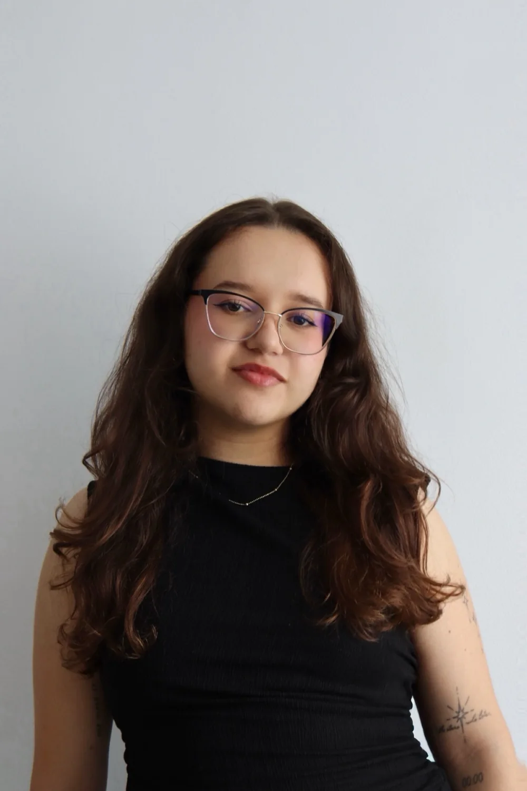
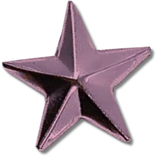

Habito
Antes de abrir un programa, visito, pregunto y miro de cerca. Entiendo tu tema, tu lugar y a tu gente desde adentro.




Alejandra María Correa, diseñadora crossmedia y directora de arte. Estudio octavo semestre de Diseño Crossmedia en la Universidad Cooperativa de Colombia y trabajo como freelance desde hace tres años.
Me muevo entre la música, la moda, el arte, la cultura y la ruralidad. Mi propósito es darle forma visual a lo que tiene alma, para que las identidades, prácticas y personas que suelen pasar desapercibidas se vean con el detalle que merecen.
Mi carácter en tres arquetipos:
Tú traes la historia; yo te acompaño a encontrar su forma.
Antes de abrir un programa, visito, pregunto y miro de cerca. Entiendo tu tema, tu lugar y a tu gente desde adentro.
Convierto lo que encontré en concepto y atmósfera: referentes, moodboard y un universo visual con sentido.
Le doy forma en cada medio: identidad, piezas gráficas, fotografía, video o web, con un toque hecho a mano cuando el proyecto lo pide.
Un poco de los procesos: mi espacio de trabajo, los bocetos, los rodajes y el papel antes de la pantalla. Mueve las fotos y míralas de cerca.
Trabajo con artistas, marcas y colectivos culturales. Si tienes algo propio que contar, escríbeme o empieza por el brief en ALMA.